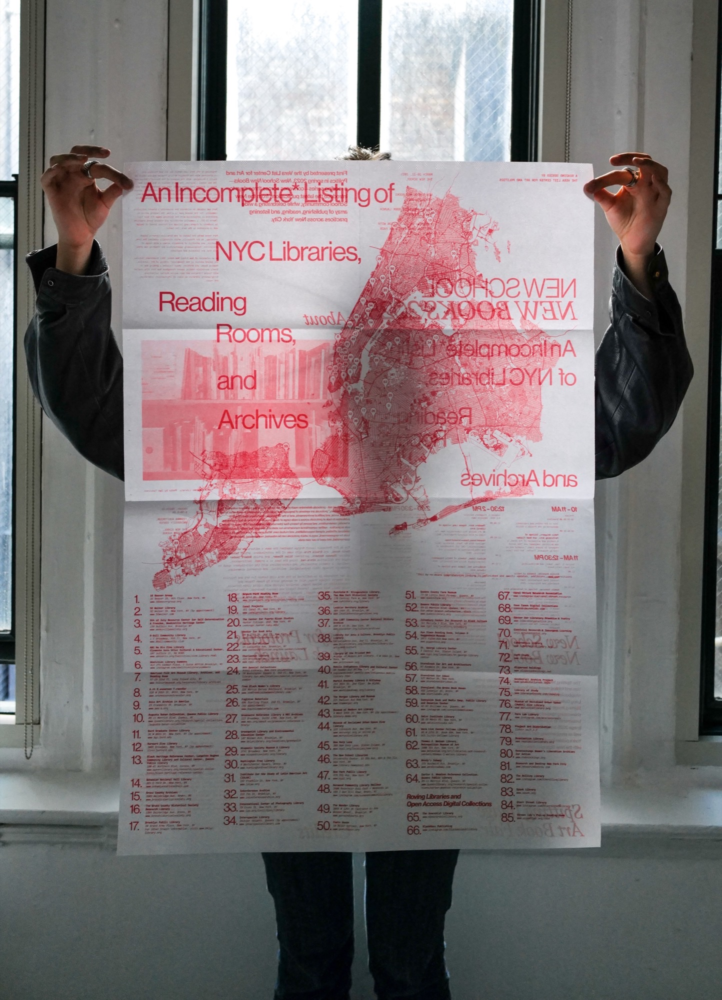
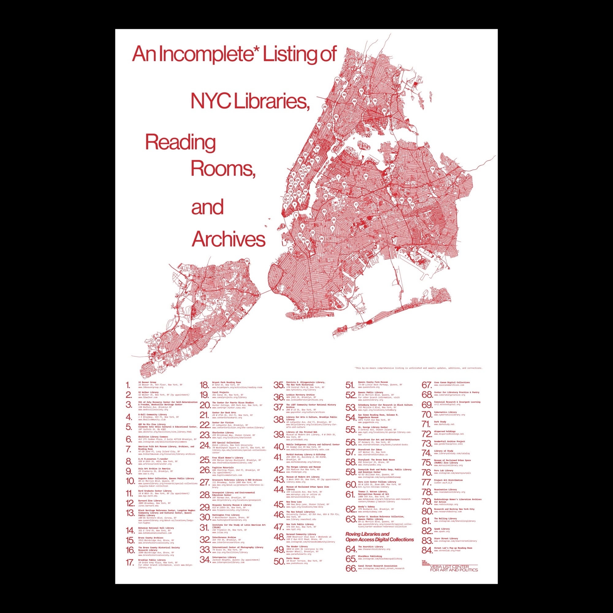
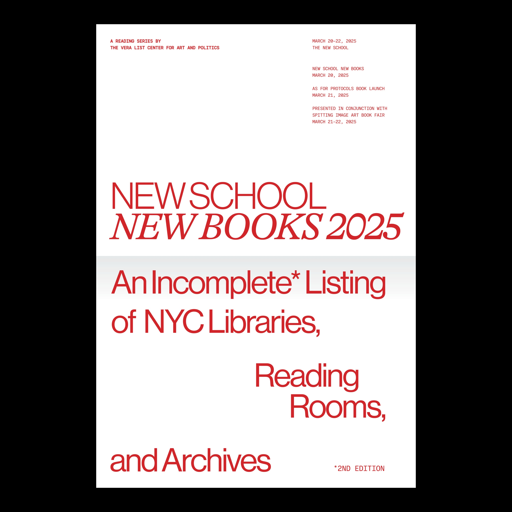
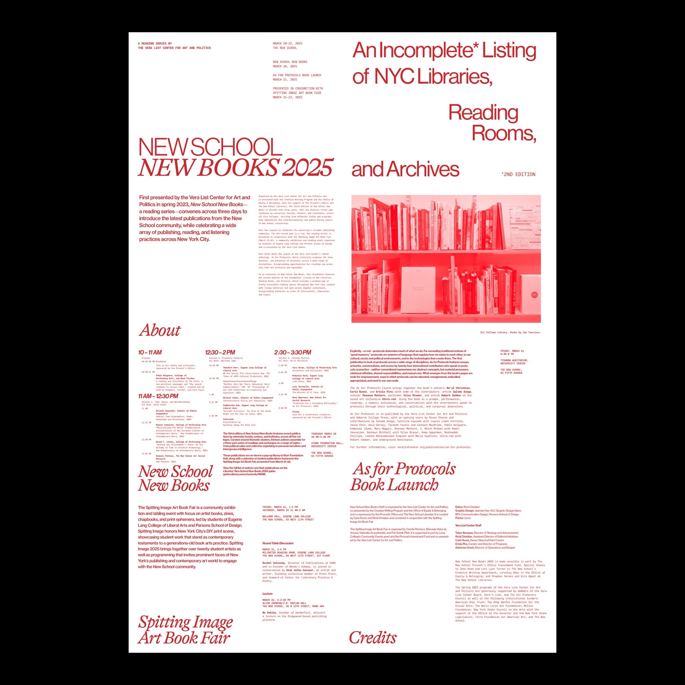
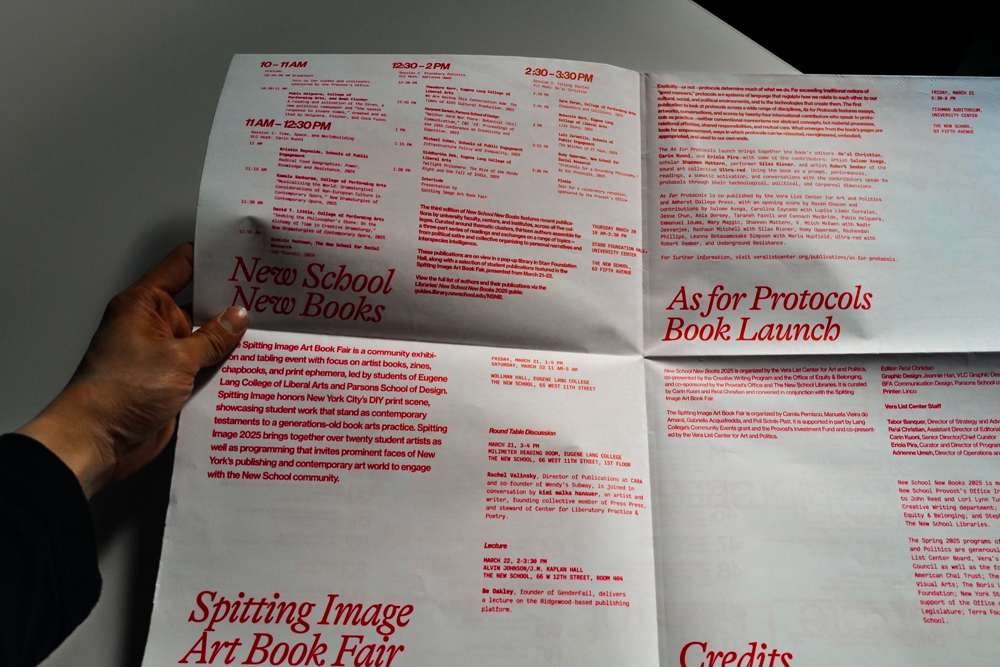
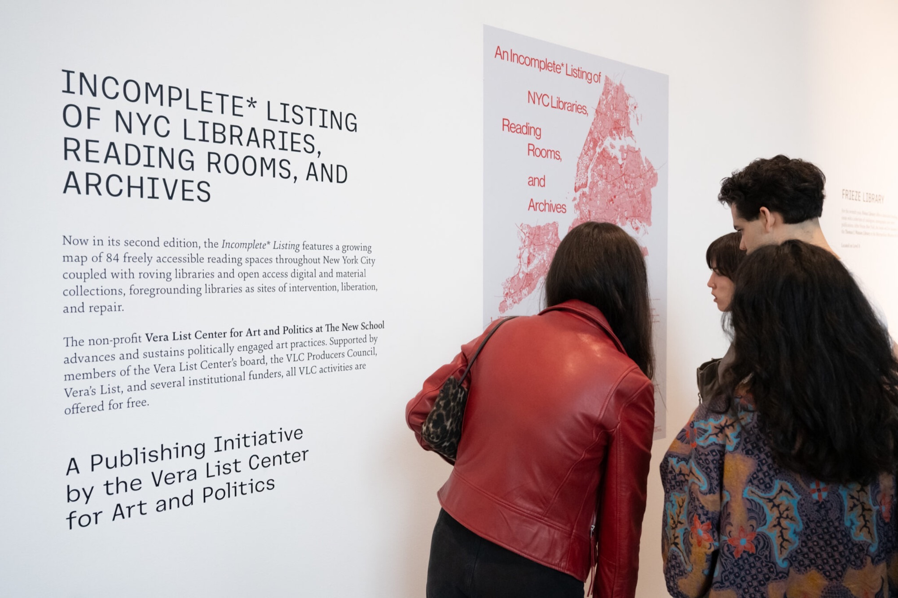
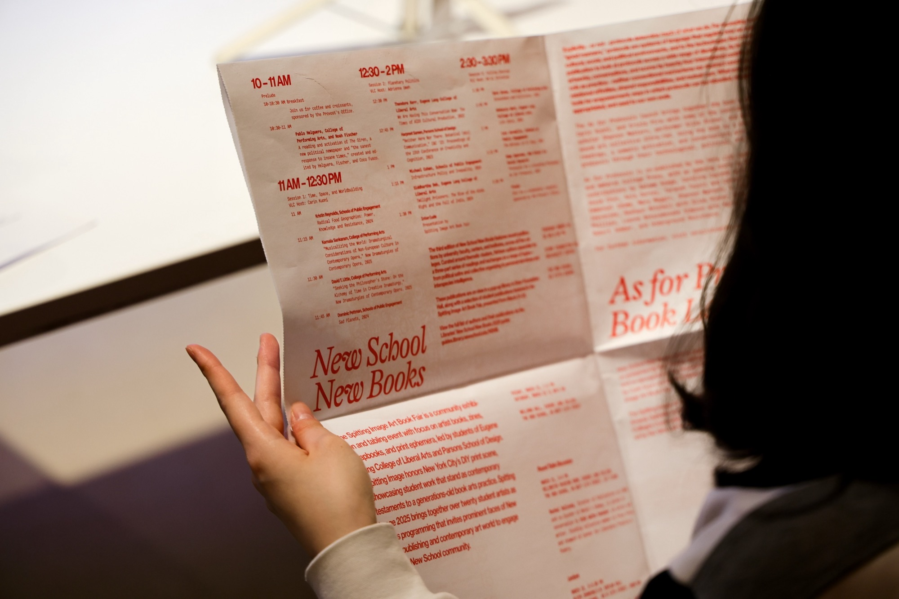

“An Incomplete* Listing of NYC Libraries, Reading Rooms, and Archives” accompanies New School New Books 2025, a reading series co-presented by the Vera List Center for Art and Politics and The New School. This broadsheet features a growing map of freely accessible reading spaces throughout New York City, along with roving libraries and open digital collections.
As an extension of the 2024 edition created in collaboration with the C& Center of Unfinished Business at The New School, and the recent edition for Los Angeles libraries, reading rooms, and archives, this publication serves as an evolving resource and tool for New York City’s 8.5+ million residents.






